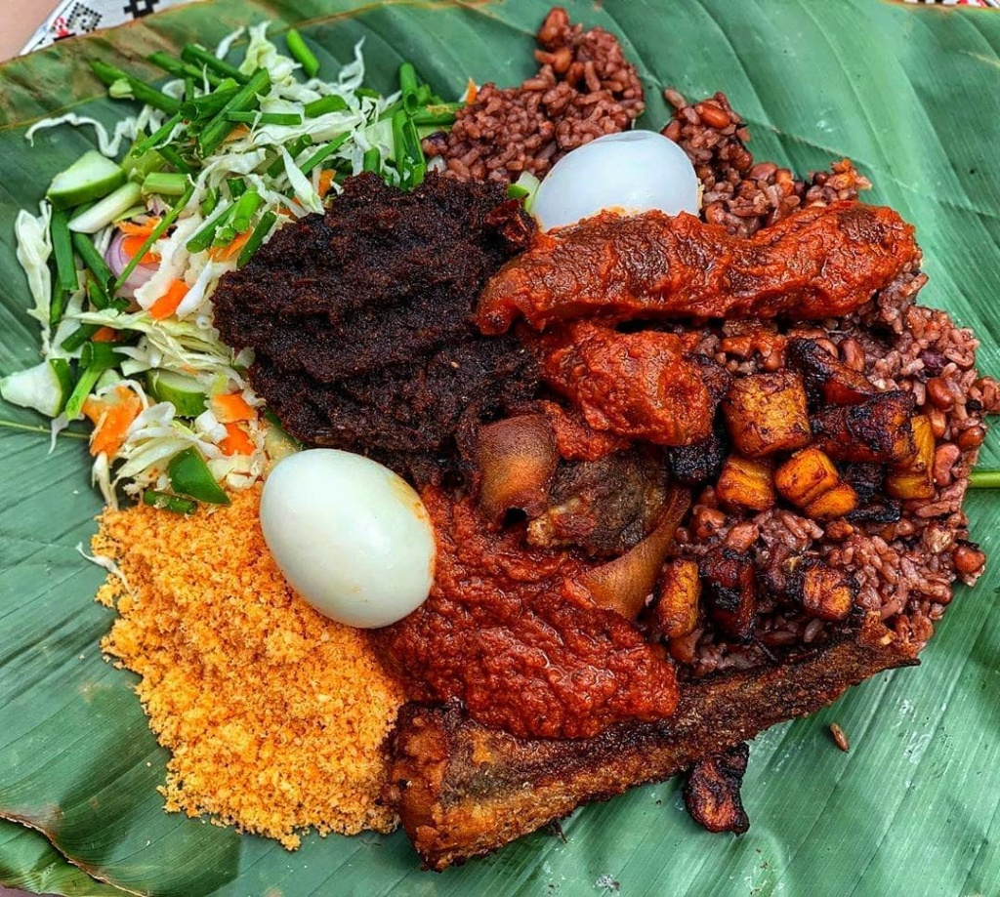

Waakye

Description
Waakye is a dish that is love by a lot of people because of its unique taste
Ingredients
- 5 1/2 cups of white rice
- 2 cups of black eye piece
- 10-12 pieces of millet or wakye leaves
- 1 tablespoon of bakind soda
- 1 tablespoon of salt
- 5-7 cups of water
- First, wash the beans and soak it overnight. If you are pressed with time, soak for at least 30 minutes. Soaking the beans helps get rid of the gas that is normally found in beans.
- Next day, strain the water that was used to soak the beans. Transfer the beans into a cooking pot then add the millet or waakye leaves, 1 teaspoon baking soda, 3 cups of water and stir well. Cover the pot and cook until the beans are halfway done. About 8 minutes.
- After 8 minutes, wash the rice and add it to the beans and millet leaves. Add 3 cups of water and salt. Stir well, cover and cook for 10 minutes.
- After 10 minutes, take out the waakye leaves and fluff the rice with a fork, then cover and let it cook for another 10 minutes.
- With a fork, fluff the rice again, then cover it with a paper towel and cook until the rice is soft.